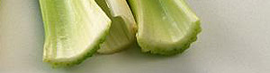

Sellerie/Karotten-Gemüse
4 von 6stangensellerie, gelbe und rote karotten sowie eine zwiebel putzen und mit olivenöl
in einer pfanne dämpfen. salzen und noch knackig servieren.

stangensellerie, gelbe und rote karotten sowie eine zwiebel putzen und mit olivenöl
in einer pfanne dämpfen. salzen und noch knackig servieren.

Montagsplausch Nr. 26. Der Abend hiess «steinpilzrisotto mit sellerie/karotten-gemüse».